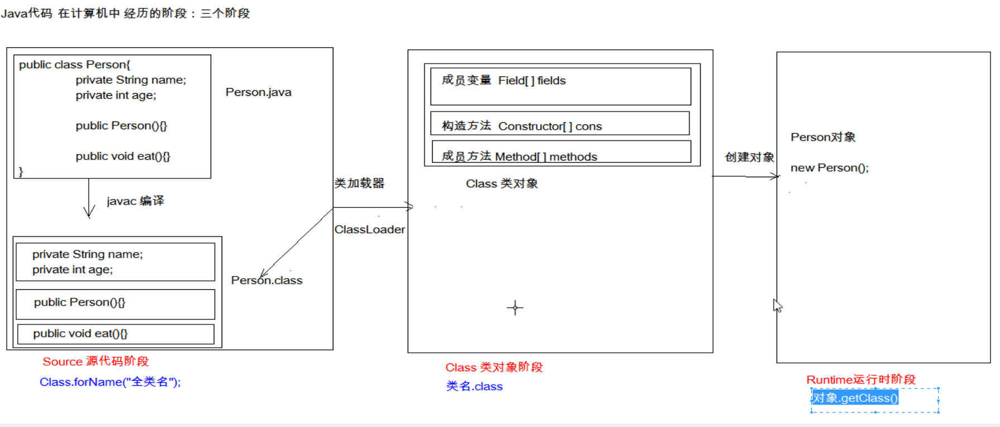

Junit单元测试&反射&注解
一、Junit单元测试
测试分类
黑盒测试：
不需要写代码
，给输入值，看程序是否能够输出期望的值
白盒测试：
需要写代码的
。关注程序具体的
执行流程（Junit属于白盒测试）
Junit使用：
步骤：
定义一个测试类
测试类名：被测试的类名Test CalculatorTest
包名：xxx.xxx.xx.test cn.itcast.test
定义测试方法：可以独立运行
方法名：test测试的方法名 testAdd()
返回值：void
参数列表：空参
给方法加@Test
导入Junit依赖环境
判定结果
红色：失败
绿色：成功
一般我们会使用断言操作来处理结果
Assert.assertEquals(期望的结果,运算的结果);
补充：
@Before:
修饰的方法会在测试方法之前被自动执行
@After:
修饰的方法会在测试方法执行之后自动被执行
二、反射：框架设计的灵魂

框架：
半成品软件。可以在框架的基础上进行软件开发，简化编码
反射：
将类的各个组成部分封装为其他对象，这就是反射机制
好处：
可以在程序运行过程中，操作这些对象。
可以解耦，提高程序的可扩展性。
获取class对象的方式
Class.forName("全类名")
：将字节码文件加载进内存，返回Class对象
多用于配置文件，将类名定义在配置文件中。读取文件，加载类
类名.class：通过类名的属性class获取
多用于参数的传递
对象.getClass()：getClass()方法在Object类中定义着。
多用于对象的获取字节码的方式
结论：
同一个字节码文件(*.class)在一次程序运行过程中，只会被加载一次，不论通过哪一种方式获取的Class对象都是同一个。
class对象功能：
获取功能：
获取成员变量
Field[] getFields() ：获取所有
public修饰
的成员变量
Field getField(String name) 获取
指定名称的 public修饰
的成员变量
Field[] getDeclaredFields()
获取所有的成员变量，不考虑修饰符
Field getDeclaredField(String name)
获取构造方法
Constructor<?>[] getConstructors()
Constructor<T> getConstructor(类<?>... parameterTypes)
Constructor<T> getDeclaredConstructor(类<?>... parameterTypes)
Constructor<?>[] getDeclaredConstructors()
获取成员方法
Method[] getMethods()
Method getMethod(String name, 类<?>... parameterTypes)
Method[] getDeclaredMethods()
Method getDeclaredMethod(String name, 类<?>... parameterTypes)
获取全类名
String getName()
Filed：成员变量
操作
设置值
void set(Object obj, Object value)
获取值
get(Object obj)
忽略访问权限修饰符的安全检查
setAccessible(true):
暴力反射
Constructor：构造方法
借助Class类中的getConstractor方法
创建对象：
T newInstance(Object... initargs)
如果使用空参数构造方法创建对象，操作可以简化：Class对象的newInstance方法
Method：方法对象
执行方法
Object invoke(Object obj, Object... args)
获取方法名称
String getName:获取方法名
三、注解
概念：说明程序的，给计算机看的
注释：
用文字描述程序的。给程序员看的
定义：
注解（Annotation），也叫元数据。一种代码级别的说明。它是JDK1.5及以后版本引入的一个特性，与类、接口、枚举是在同一个层次。它可以声明在包、类、字段、方法、局部变量、方法参数等的前面，
用来对这些元素进行说明，注释。
概念描述：
JDK1.5之后的新特性
说明程序的
使用注解：@注解名称
作用分类：
编写文档
：通过代码里标识的注解生成文档【生成文档doc文档】
代码分析
：通过代码里标识的注解对代码进行分析【使用反射】
编译检查
：通过代码里标识的注解让编译器能够实现基本的编译检查【Override】
JDK中预定义的一些注解
@Override：检测被该注解标注的方法是否是继承自父类(接口)的
@Deprecated：该注解标注的内容，表示已过时
@SuppressWarnings：压制警告
一般传递参数all @SuppressWarnings("all")
自定义注解
格式
元注解
public @interface 注解名称{
属性列表;
}
本质：
注解本质上就是一个
接口
，该接口默认继承Annotation接口
public interface MyAnno extends java.lang.annotation.Annotation {}
属性：
接口中的抽象方法
要求：
属性的返回值类型有下列取值
基本数据类型
String
枚举
注解
以上类型的数组
定义了属性，在使用时需要给属性赋值
如果定义属性时，使用default关键字给属性默认初始化值，则使用注解时，可以不进行属性的赋值。
如果只有一个属性需要赋值，并且属性的名称是value，则value可以省略，直接定义值即可。
数组赋值时，值使用{}包裹。如果数组中只有一个值，则{}可以省略
元注解：
用于描述注解的注解
@Target：描述注解能够作用的位置
ElementType取值：
TYPE：可以作用于类上
METHOD：可以作用于方法上
FIELD：可以作用于成员变量上
@Retention：描述注解被保留的阶段
@Retention(RetentionPolicy.RUNTIME)：当前被描述的注解，会保留到class字节码文件中，并被JVM读取到
@Documented：描述注解是否被抽取到api文档中
@Inherited：描述注解是否被子类继承
在程序使用（解析）注解：获取注解中定义的属性值
获取注解定义的位置的对象 （Class，Method,Field）
获取指定的注解
* getAnnotation(Class)
//其实就是在内存中生成了一个该注解接口的子类实现对象
public class ProImpl implements Pro{
public String className(){
return "cn.itcast.annotation.Demo1";
}
public String methodName(){
return "show";
}
}
调用注解中的抽象方法获取配置的属性值